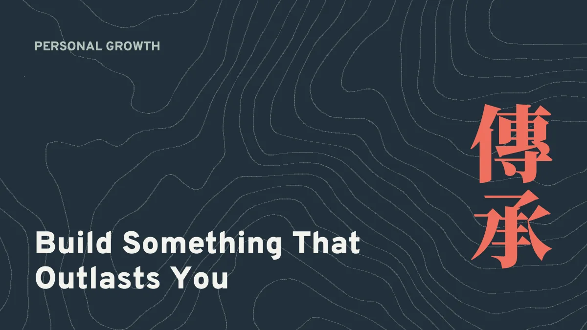
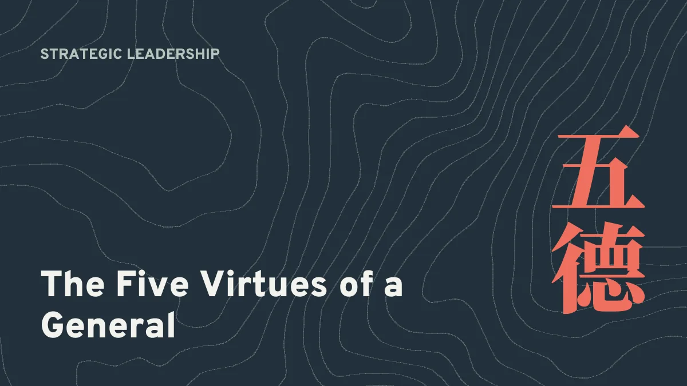
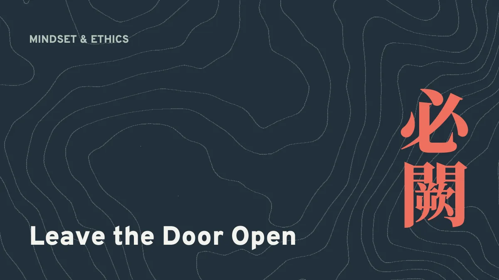
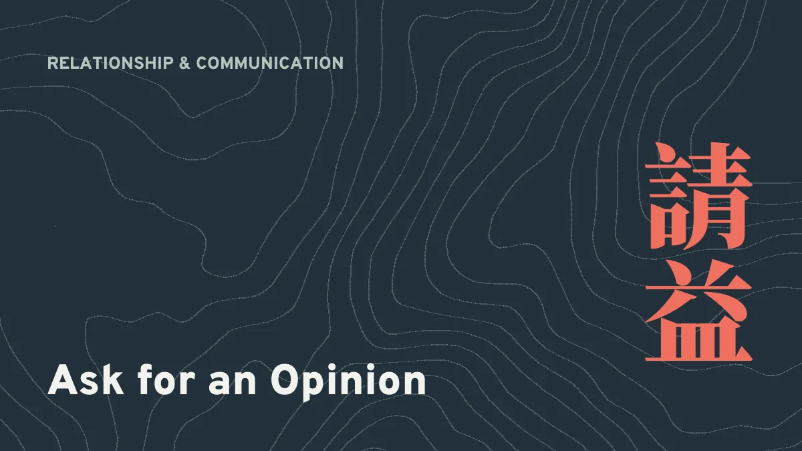
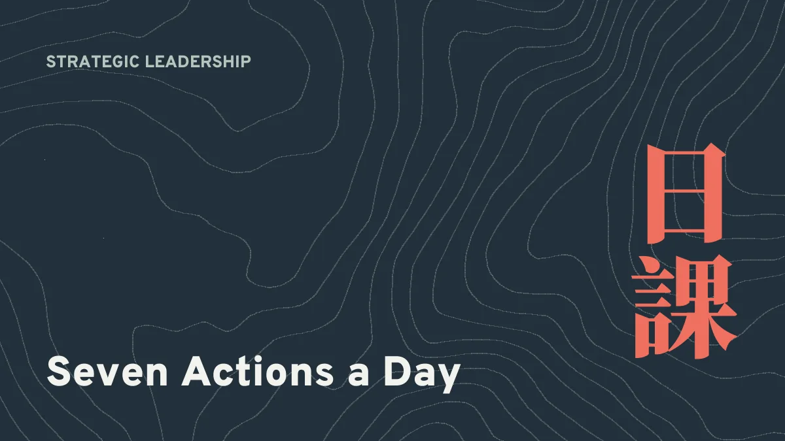
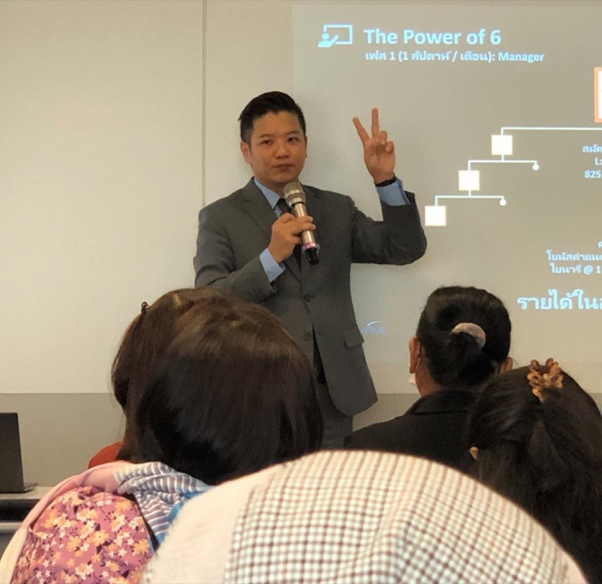

-

建立一份比你走得更遠的
事業 領袖最難的考驗，出現在他退後一步的時候。如果團隊什麼都需要你，你建立的是一份工作。如果你休息時它仍在成長，你建立的是一份能長久的事業。
-
行業與適應 擴張，還是守住？打開新市場之前的
五個問題 一個新城市、一個新國家、一群新受眾。擴張感覺像成長，有時候確實是。但有時候，它把團隊拉得太薄，什麼都守不住。五個問題，幫你分辨。
-
團隊建設 一次只教一件事：為什麼你最好的
培訓，往往是最短的 那一場 很長的培訓感覺很慷慨，卻改變很少。大家帶著熱血離開，幾乎什麼都記不住，然後繼續做以前做的事。一次教一個技能，當場練習，下週檢查。
-

將者五德：孫子給直銷領袖的
領導力檢測 智、信、仁、勇、嚴。孫子在兩千五百年前列出將領的五種特質，到今天，它們仍是我知道最好的領袖自我檢測。
-
策略領導力 選擇把時間投資在誰身上：你的
時間應該跟著行動走，而不是跟著希望走 領袖的時間，是團隊裡最稀缺的資源。把它花在你希望會開始的人身上，你很快就會用光。把它花在已經在動的人身上，整個團隊都會加速。
-
團隊建設 第一週決定第一年：新夥伴看著你，學到了什麼
新夥伴第一週會聽你說什麼，但他們複製的是你做什麼。讓他們看到工作怎麼做，讓他們在你身邊試，他們養成的習慣，會陪他們走過一整年。
-

留一道門：孫子教我們，永遠不要把人逼到死角
「圍師必闕，窮寇勿迫。」把人逼到死角，他會拼命反抗。給他一條出路，他往往會自己走向你。
-
關係與溝通 跟進，而不是追著跑：怎麼保持聯絡，讓對方樂於收到你的
訊息 大多數機會不是被拒絕，而是在沉默中流失。解法是好好跟進：頻繁到對方記得你，溫和到對方歡迎你，而且每次都帶著值得一讀的東西。
-
團隊建設 你不需要知道所有答案：第三個聲音的
力量 很多新人以為，自己要先成為專家，才能分享任何東西。其實不必。你的工作是把人跟對的聲音連起來，而那個聲音不一定是你。
-
心態與道德 你一直逃避邀約的
真正原因，以 及怎麼停止逃避 大多數不再邀約的人，缺的不是技巧。他們是在保護自己，躲開某一種感覺。說出那種感覺、降低賭注，手機就會變輕。
-

「我以為你是我朋友」：為什麼我邀約之前，先請對方給意見
我事業裡最慘痛的一課，是跟一位大學同學喝咖啡時學到的。它改變了我開啟每一段對話的方式：先問對方怎麼想。
-
關係與溝通 你最好的
潛在客戶，多半不在你的 熟人名單上 每個新人都被教導從親朋好友開始。這是不錯的起點，卻不是久留的地方。最可能珍惜你所提供的東西的人，通常是你還沒認識的人。
-

忙了60天，客戶是零：改變局面的
每日七項行動 他每天發文、參加每一場培訓、讀完所有產品手冊。60天後，客戶還是零。問題出在他的時間花在哪裡，解法是每天七個簡單的動作，持續90天。
-
心態與道德 用你的
經驗說話，而不是用產品手冊 對方幾秒鐘內就分辨得出，你是在背產品手冊，還是在講自己的生活。分享任何產品之前，先跟它一起生活夠久，久到你能誠實地談它，包括在你身上沒有改變的地方。
-
策略領導力 你的
團隊會複製完整的 你，包括你不希望他們學的 那部分 複製是這個事業的核心，而它不會只複製你的優勢。如果你的團隊一直吸引人、又一直留不住人，看看你不在台上的時候，示範的是什麼。
-
關係與溝通 先問再賣：你的
客戶，早就知道你的 市場在哪裡 我們大多是用猜的：猜客戶是誰、猜他們為什麼買。其實已經跟你買過的人，可以用他們自己的話告訴你，前提是你問對問題，然後閉上嘴。
-
關係與溝通 向討厭被推銷的
世代銷售：不靠炒作贏得 Z 世代 Z 世代對直銷的老套路有著極其敏銳的雷達：炒作、緊迫感、假稀缺。舊劇本對他們不只是失效，而是直接把他們推開。這篇談的是新做法。
-
團隊建設 真正有效的
肯定：超越別針、旅遊 和台上亮相 業界熱愛別針、旅遊和台上亮相，但大多數的肯定其實無法真正驅動行為。從企業端觀察多年後，我看懂了什麼樣的肯定才有效。
-
策略領導力 高原期：為什麼你的
收入停止成長，以 及重啟成長的 三個槓桿 你一路往上爬，然後，停了。收入月復一月停在原地。高原期是直銷生涯中最被誤解的階段，以及三個能重啟成長的結構性槓桿。
-
行業與適應 AI 衝擊：人工智慧對直銷領袖的
真正意義 當年大家說社群媒體會「殺死」直銷，結果沒有。現在輪到 AI。這一次的恐慌一半對、一半危險地錯，AI 究竟改變了什麼，又有什麼是它永遠無法取代的。
-
個人成長 東山再起：失去動能後，如何重新開始
每個走長線的領袖都會遇到停滯期。一場真正的東山再起該長什麼樣，來自我陪伴走過的領袖。沒了動力時，如何重新開始。
-
心態與道德 在現代直銷裡，孫子兵法錯在哪裡
我寫了一本把孫子兵法應用到直銷的書。這篇給你逆向思考：2500 年的兵書哪些原則仍適用，哪些已被現代戰場推翻，為什麼兩面都要看。
-
團隊建設 兩年之牆：為什麼一半的
團隊會在第二年放棄 第一年靠熱情。第三年靠慣性。第二年，是一道牆。為什麼這一年最考驗留存率，企業端的數據說了什麼，以及該怎麼帶你的人走過去。
-
策略領導力 公司轉換期的
領導：如何不失去你一手帶起的 團隊 在直銷裡換公司，是一場領導力的壓力測試。如何在不犧牲誠信、不破壞信任、不失去你帶出來的人之下完成轉換。
-
團隊建設 導師陷阱：當過度幫助反而傷害你的
團隊 最用心的導師，往往養出最依賴的團隊。過度幫忙其實是披著善意外衣的領導失敗，以及如何培養真正的獨立性。
-
關係與溝通 何時對準客戶說不：招錯人的
隱性代價 不是每個準客戶都值得追。招錯人的隱性代價，以及為什麼說「不」才是你最有策略的選擇。
-
行業與適應 小市場的
優勢：為什麼「二線」城市往往贏得更多 人人搶攻吉隆坡、曼谷、雅加達。但最聰明的領袖正在怡保、亞庇、泗水默默耕耘。這就是「二線」城市悄悄勝出的原因。
-
個人成長 你不需要當銷售員：在直銷中找到你的
使命感 直銷最大的迷思就是你得天生會賣東西。事實正好相反，最成功的人透過Ikigai框架找到了屬於自己的獨特路徑。
-
關係與溝通 停止推銷，開始傾聽：跟進的
藝術 多數領袖的跟進就是再推銷一次。真正的藝術在於傾聽，理解準客戶心裡在想什麼，以及他們真正需要聽到什麼。
-
團隊建設 黃金72小時：新夥伴加入後你該做什麼
新夥伴加入後的72小時是最關鍵的黃金窗口。這段時間的經歷，決定了他是長期經營者還是90天就消失。
-
關係與合作 聯盟問題：如何
與其他領袖共建而不互相拆台 旁線和同級領袖的關係是長期成功中最被低估的因素。認識三種有毒模式，以及良性競爭如何打造帝國。
-
行業與適應 戰場已變：為什麼昨天的
打法正在讓你失去明天的 領袖 直銷的格局已經根本性地改變。看懂為什麼昨天的做法正在流失明天最優秀的人才，以及如何在不丟掉原則的前提下轉型。
-
心態與道德 被動收入的
迷思：直銷真正付你薪水的 理由 被動收入是直銷中最被濫用的承諾。真正的收入到底在獎勵什麼？搞懂這件事，一切都會不同。
-
心態與道德 十年大考：如何判斷你的
直銷事業能不能走得長 多數人只想到直銷的頭90天。這裡有五個問題，幫你檢視自己的做法十年後還能不能站得住。
-
團隊建設 別再複製你的
上線：為什麼複製正在扼殺你的 團隊 這個行業最愛講「複製」。但盲目複製正是多數團隊卡住的原因。搞清楚複製「原則」和複製「方法」的差別。
-
策略領導力 新直銷領袖必打的
五場仗 頭兩年就是戰場。多數人放棄是因為不知道該打哪些仗。以下是最關鍵的五場。
-

為什麼你的
團隊不斷離開（以 及你沒看到的） 如果你的團隊一直在流失，問題可能不在他們身上。這是多數領袖從未察覺的三大隱形殺手。
-
策略領導力 將軍的
困境：何時衝前線 vs. 何時坐鎮後方 什麼時候該親自上陣開發，什麼時候該退一步培養人？答案不是非黑即白，而是一把滑尺。
-
策略領導力 雙重視角：從前線走到管理層的
領悟 多數直銷培訓師只看過一面。走過8年前線和15年管理，以下是雙方各自的對與錯。
-
策略領導力 為什麼多數網絡行銷領袖只是瞎忙，而非真正有策略
團隊建起來了，業績也在漲。但你卻比以前更忙。問題不在你的態度，而在你的運作模式。
-
心態與道德 贏在正道：為什麼道德是你最大的
競爭優勢 在一個充斥炒作和捷徑的行業裡，堅守道德不只是品格，更是你最強大的長期策略。
每週一封信
直銷的領導力與策略，直接寄到你的信箱。不發垃圾信，隨時可退訂。
請到信箱確認訂閱。不發垃圾信，隨時可退訂。